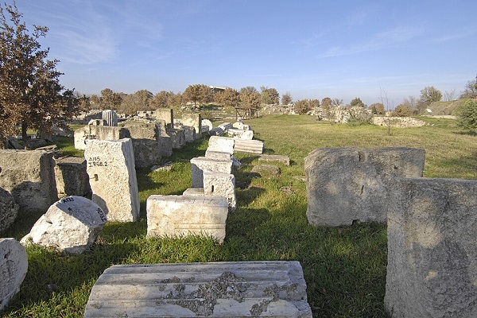
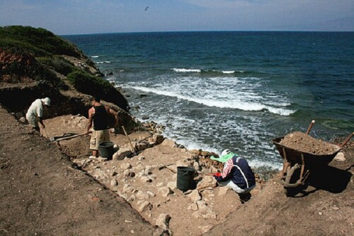
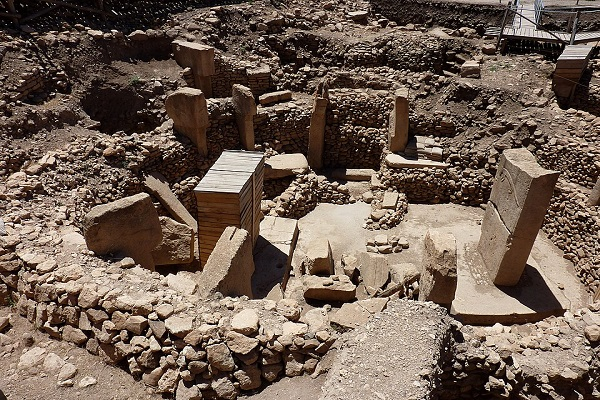
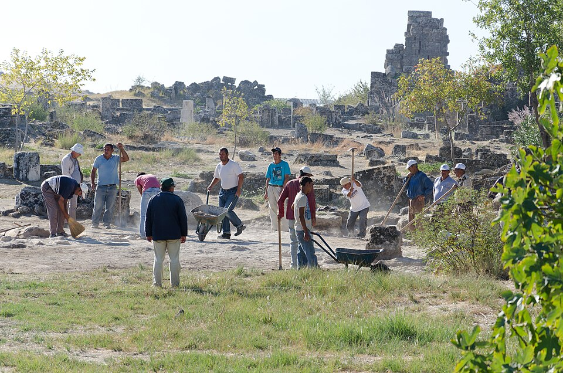
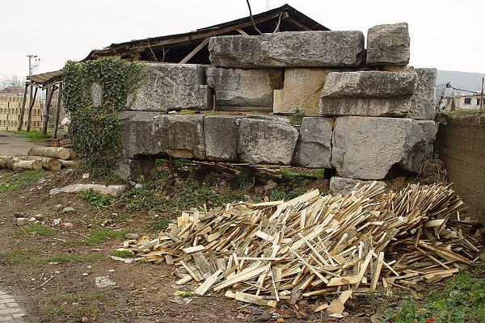
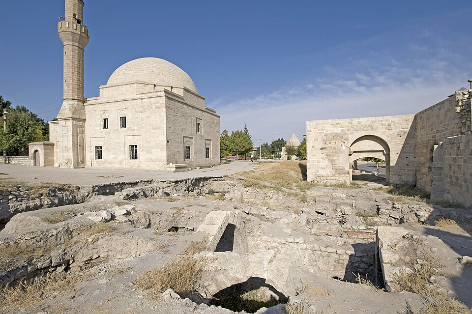
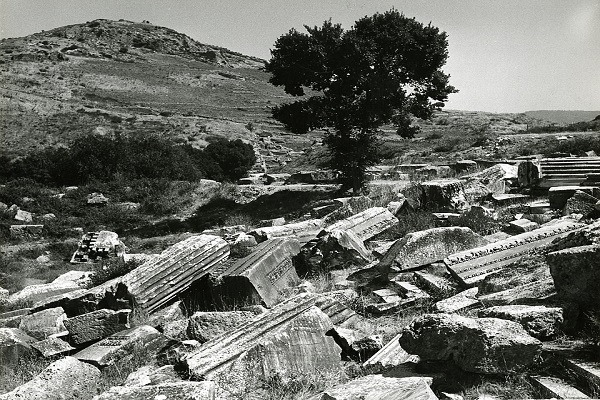
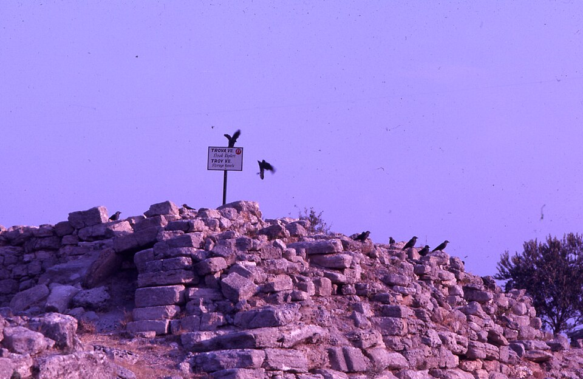
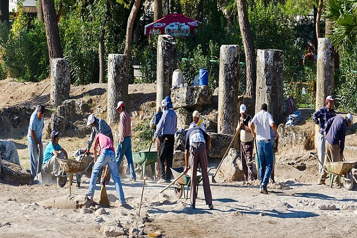
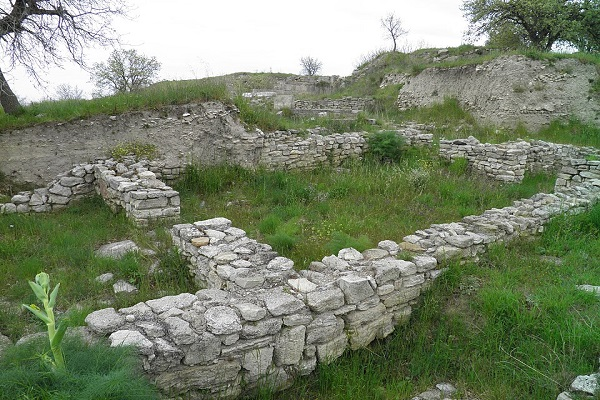

.jpg)
For Scrolling Press up & down Arrow Keys
Photograph By Bert Kaufmann from Roermond, Netherlands, CC BY 2.0, via Wikimedia Commons
.jpg){kind=link}


Photograph By Dosseman, CC BY-SA 4.0, via Wikimedia Commons


Photograph By François Bertemes, CC BY-SA 3.0, via Wikimedia Commons

Photograph By Zhengan, CC BY-SA 4.0, via Wikimedia Commons
.JPG){kind=link}

Photograph By Chris_Parfitt from Morden, Surrey, England, CC BY 2.0, via Wikimedia Commons


Photograph By Dosseman, CC BY-SA 4.0, via Wikimedia Commons


Photograph By Dosseman, CC BY-SA 4.0, via Wikimedia Commons


Photograph By Paolo Monti, CC BY-SA 4.0, via Wikimedia Commons
_-_BEIC_6362076.jpg){kind=link}

Photograph By Paolo Monti, CC BY-SA 4.0, via Wikimedia Commons
_-_BEIC_6359669.jpg){kind=link}

Photograph By Chris_Parfitt from Morden, Surrey, England, CC BY 2.0, via Wikimedia Commons


Photograph By Carole Raddato from FRANKFURT, Germany, CC BY-SA 2.0, via Wikimedia Commons
,_Turkey_(7446689474).jpg){kind=link}
For Scrolling Press up & down Arrow Keys
Photograph By Bert Kaufmann from Roermond, Netherlands, CC BY 2.0, via Wikimedia Commons